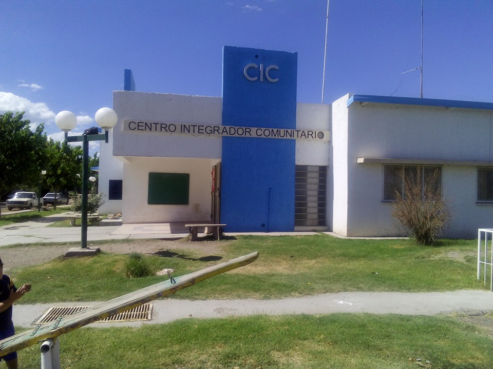

Nosotros
Desde su inauguración en 2011, el Centro Integrador Comunitario (CIC) del barrio El Sosneado ha sido un pilar fundamental en la vida de nuestra comunidad. Al brindar un espacio donde salud, educación y bienestar se entrelazan, el CIC ha fortalecido el tejido social de nuestro barrio. Con una gama de servicios que abarcan desde la atención médica hasta la formación profesional y la recreación, este centro ha sido un catalizador de cambio y progreso. Su compromiso con la cultura del trabajo y el desarrollo de emprendimientos locales no solo ha enriquecido la vida económica del barrio, sino que también ha reavivado prácticas culturales esenciales para nuestra identidad comunitaria.

El Centro Integrador Comunitario es un faro de esperanza y un núcleo de crecimiento para el barrio El Sosneado. Con iniciativas como 'Germinando Emprendimientos', el CIC no solo ha otorgado herramientas prácticas para la autosuficiencia, sino que también ha fortalecido el espíritu comunitario. La red de apoyo que ha tejido a lo largo de los años muestra que cuando trabajamos juntos, somos más fuertes. Así, el CIC sigue siendo un lugar donde cada miembro de la comunidad puede encontrar soporte y oportunidades para un futuro mejor, redefiniendo la cultura del trabajo y la colaboración en nuestro barrio.
A lo largo de los años, el Centro Integrador Comunitario del barrio El Sosneado se ha convertido en un punto de encuentro para todas las generaciones, ofreciendo desde espacios de alfabetización hasta jardines infantiles y talleres de capacitación. Este centro ha demostrado ser un elemento integral en la promoción de la salud comunitaria, la seguridad social y el ejercicio de derechos. En tiempos de crisis y de calma, el CIC ha sido el corazón del barrio, adaptándose y respondiendo a las necesidades de sus vecinos. Es un testimonio viviente de cómo la unión y la resiliencia pueden florecer incluso en las circunstancias más desafiantes.